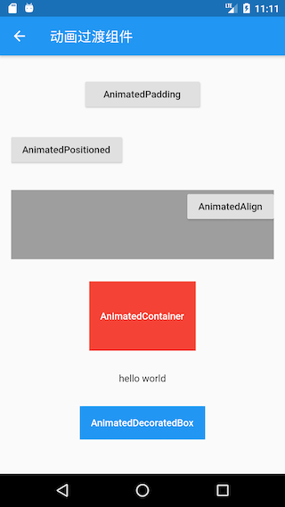

9.7 动画过渡组件
为了表述方便，本书约定，将在Widget属性发生变化时会执行过渡动画的组件统称为”动画过渡组件“，而动画过渡组件最明显的一个特征就是它会在内部自管理AnimationController。我们知道，为了方便使用者可以自定义动画的曲线、执行时长、方向等，在前面介绍过的动画封装方法中，通常都需要使用者自己提供一个AnimationController对象来自定义这些属性值。但是，如此一来，使用者就必须得手动管理AnimationController，这又会增加使用的复杂性。因此，如果也能将AnimationController进行封装，则会大大提高动画组件的易用性。
9.7.1 自定义动画过渡组件
我们要实现一个AnimatedDecoratedBox，它可以在decoration属性发生变化时，从旧状态变成新状态的过程可以执行一个过渡动画。根据前面所学的知识，我们实现了一个AnimatedDecoratedBox1组件：
class AnimatedDecoratedBox1 extends StatefulWidget {
const AnimatedDecoratedBox1({
Key? key,
required this.decoration,
required this.child,
this.curve = Curves.linear,
required this.duration,
this.reverseDuration,
}) : super(key: key);
final BoxDecoration decoration;
final Widget child;
final Duration duration;
final Curve curve;
final Duration? reverseDuration;
@override
_AnimatedDecoratedBox1State createState() => _AnimatedDecoratedBox1State();
}
class _AnimatedDecoratedBox1State extends State<AnimatedDecoratedBox1>
with SingleTickerProviderStateMixin {
@protected
AnimationController get controller => _controller;
late AnimationController _controller;
Animation<double> get animation => _animation;
late Animation<double> _animation;
late DecorationTween _tween;
@override
Widget build(BuildContext context) {
return AnimatedBuilder(
animation: _animation,
builder: (context, child) {
return DecoratedBox(
decoration: _tween.animate(_animation).value,
child: child,
);
},
child: widget.child,
);
}
@override
void initState() {
super.initState();
_controller = AnimationController(
duration: widget.duration,
reverseDuration: widget.reverseDuration,
vsync: this,
);
_tween = DecorationTween(begin: widget.decoration);
_updateCurve();
}
void _updateCurve() {
_animation = CurvedAnimation(parent: _controller, curve: widget.curve);
}
@override
void didUpdateWidget(AnimatedDecoratedBox1 oldWidget) {
super.didUpdateWidget(oldWidget);
if (widget.curve != oldWidget.curve) _updateCurve();
_controller.duration = widget.duration;
_controller.reverseDuration = widget.reverseDuration;
//正在执行过渡动画
if (widget.decoration != (_tween.end ?? _tween.begin)) {
_tween
..begin = _tween.evaluate(_animation)
..end = widget.decoration;
_controller
..value = 0.0
..forward();
}
}
@override
void dispose() {
_controller.dispose();
super.dispose();
}
}
下面我们来使用AnimatedDecoratedBox1来实现按钮点击后背景色从蓝色过渡到红色的效果：
Color _decorationColor = Colors.blue;
var duration = Duration(seconds: 1);
...//省略无关代码
AnimatedDecoratedBox1(
duration: duration,
decoration: BoxDecoration(color: _decorationColor),
child: TextButton(
onPressed: () {
setState(() {
_decorationColor = Colors.red;
});
},
child: const Text(
"AnimatedDecoratedBox",
style: TextStyle(color: Colors.white),
),
),
)
点击前效果如图9-7所示，点击后截取了过渡过程的一帧如图9-8所示： 

点击后，按钮背景色会从蓝色向红色过渡，图9-9是过渡过程中的一帧，有点偏紫色，整个过渡动画结束后背景会变为红色。
上面的代码虽然实现了我们期望的功能，但是代码却比较复杂。稍加思考后，我们就可以发现，AnimationController的管理以及Tween更新部分的代码都是可以抽象出来的，如果我们这些通用逻辑封装成基类，那么要实现动画过渡组件只需要继承这些基类，然后定制自身不同的代码（比如动画每一帧的构建方法）即可，这样将会简化代码。
为了方便开发者来实现动画过渡组件的封装，Flutter提供了一个ImplicitlyAnimatedWidget抽象类，它继承自StatefulWidget，同时提供了一个对应的ImplicitlyAnimatedWidgetState类，AnimationController的管理就在ImplicitlyAnimatedWidgetState类中。开发者如果要封装动画，只需要分别继承ImplicitlyAnimatedWidget和ImplicitlyAnimatedWidgetState类即可，下面我们演示一下具体如何实现。
我们需要分两步实现：
-
继承
ImplicitlyAnimatedWidget类。class AnimatedDecoratedBox extends ImplicitlyAnimatedWidget { const AnimatedDecoratedBox({ Key? key, required this.decoration, required this.child, Curve curve = Curves.linear, required Duration duration, }) : super( key: key, curve: curve, duration: duration, ); final BoxDecoration decoration; final Widget child; @override _AnimatedDecoratedBoxState createState() { return _AnimatedDecoratedBoxState(); } }其中
curve、duration、reverseDuration三个属性在ImplicitlyAnimatedWidget中已定义。 可以看到AnimatedDecoratedBox类和普通继承自StatefulWidget的类没有什么不同。 -
State类继承自
AnimatedWidgetBaseState（该类继承自ImplicitlyAnimatedWidgetState类）。class _AnimatedDecoratedBoxState extends AnimatedWidgetBaseState<AnimatedDecoratedBox> { late DecorationTween _decoration; @override Widget build(BuildContext context) { return DecoratedBox( decoration: _decoration.evaluate(animation), child: widget.child, ); } @override void forEachTween(TweenVisitor<dynamic> visitor) { _decoration = visitor( _decoration, widget.decoration, (value) => DecorationTween(begin: value), ) as DecorationTween; } }可以看到我们实现了
build和forEachTween两个方法。在动画执行过程中，每一帧都会调用build方法（调用逻辑在ImplicitlyAnimatedWidgetState中），所以在build方法中我们需要构建每一帧的DecoratedBox状态，因此得算出每一帧的decoration状态，这个我们可以通过_decoration.evaluate(animation)来算出，其中animation是ImplicitlyAnimatedWidgetState基类中定义的对象，_decoration是我们自定义的一个DecorationTween类型的对象，那么现在的问题就是它是在什么时候被赋值的呢？要回答这个问题，我们就得搞清楚什么时候需要对_decoration赋值。我们知道_decoration是一个Tween，而Tween的主要职责就是定义动画的起始状态（begin）和终止状态(end)。对于AnimatedDecoratedBox来说，decoration的终止状态就是用户传给它的值，而起始状态是不确定的，有以下两种情况：AnimatedDecoratedBox首次build，此时直接将其decoration值置为起始状态，即_decoration值为DecorationTween(begin: decoration)。AnimatedDecoratedBox的decoration更新时，则起始状态为_decoration.animate(animation)，即_decoration值为DecorationTween(begin: _decoration.animate(animation)，end:decoration)。
现在forEachTween的作用就很明显了，它正是用于来更新Tween的初始值的，在上述两种情况下会被调用，而开发者只需重写此方法，并在此方法中更新Tween的起始状态值即可。而一些更新的逻辑被屏蔽在了visitor回调，我们只需要调用它并给它传递正确的参数即可，visitor方法签名如下：
Tween<T> visitor(
Tween<T> tween, //当前的tween，第一次调用为null
T targetValue, // 终止状态
TweenConstructor<T> constructor，//Tween构造器，在上述三种情况下会被调用以更新tween
);
可以看到，通过继承ImplicitlyAnimatedWidget和ImplicitlyAnimatedWidgetState类可以快速的实现动画过渡组件的封装，这和我们纯手工实现相比，代码简化了很多。
如果读者还有疑惑，建议查看
ImplicitlyAnimatedWidgetState的源码并结合本示例代码对比理解。
9.7.2 Flutter预置的动画过渡组件
Flutter SDK中也预置了很多动画过渡组件，实现方式和大都和AnimatedDecoratedBox差不多，如表9-1所示：
| 组件名 | 功能 |
|---|---|
| AnimatedPadding | 在padding发生变化时会执行过渡动画到新状态 |
| AnimatedPositioned | 配合Stack一起使用，当定位状态发生变化时会执行过渡动画到新的状态。 |
| AnimatedOpacity | 在透明度opacity发生变化时执行过渡动画到新状态 |
| AnimatedAlign | 当alignment发生变化时会执行过渡动画到新的状态。 |
| AnimatedContainer | 当Container属性发生变化时会执行过渡动画到新的状态。 |
| AnimatedDefaultTextStyle | 当字体样式发生变化时，子组件中继承了该样式的文本组件会动态过渡到新样式。 |
import 'package:flutter/material.dart';
class AnimatedWidgetsTest extends StatefulWidget {
const AnimatedWidgetsTest({Key? key}) : super(key: key);
@override
_AnimatedWidgetsTestState createState() => _AnimatedWidgetsTestState();
}
class _AnimatedWidgetsTestState extends State<AnimatedWidgetsTest> {
double _padding = 10;
var _align = Alignment.topRight;
double _height = 100;
double _left = 0;
Color _color = Colors.red;
TextStyle _style = const TextStyle(color: Colors.black);
Color _decorationColor = Colors.blue;
double _opacity = 1;
@override
Widget build(BuildContext context) {
var duration = const Duration(milliseconds: 400);
return SingleChildScrollView(
child: Column(
children: <Widget>[
ElevatedButton(
onPressed: () {
setState(() {
_padding = 20;
});
},
child: AnimatedPadding(
duration: duration,
padding: EdgeInsets.all(_padding),
child: const Text("AnimatedPadding"),
),
),
SizedBox(
height: 50,
child: Stack(
children: <Widget>[
AnimatedPositioned(
duration: duration,
left: _left,
child: ElevatedButton(
onPressed: () {
setState(() {
_left = 100;
});
},
child: const Text("AnimatedPositioned"),
),
)
],
),
),
Container(
height: 100,
color: Colors.grey,
child: AnimatedAlign(
duration: duration,
alignment: _align,
child: ElevatedButton(
onPressed: () {
setState(() {
_align = Alignment.center;
});
},
child: const Text("AnimatedAlign"),
),
),
),
AnimatedContainer(
duration: duration,
height: _height,
color: _color,
child: TextButton(
onPressed: () {
setState(() {
_height = 150;
_color = Colors.blue;
});
},
child: const Text(
"AnimatedContainer",
style: TextStyle(color: Colors.white),
),
),
),
AnimatedDefaultTextStyle(
child: GestureDetector(
child: const Text("hello world"),
onTap: () {
setState(() {
_style = const TextStyle(
color: Colors.blue,
decorationStyle: TextDecorationStyle.solid,
decorationColor: Colors.blue,
);
});
},
),
style: _style,
duration: duration,
),
AnimatedOpacity(
opacity: _opacity,
duration: duration,
child: TextButton(
style: ButtonStyle(
backgroundColor: MaterialStateProperty.all(Colors.blue)),
onPressed: () {
setState(() {
_opacity = 0.2;
});
},
child: const Text(
"AnimatedOpacity",
style: TextStyle(color: Colors.white),
),
),
),
AnimatedDecoratedBox1(
duration: Duration(
milliseconds: _decorationColor == Colors.red ? 400 : 2000),
decoration: BoxDecoration(color: _decorationColor),
child: Builder(builder: (context) {
return TextButton(
onPressed: () {
setState(() {
_decorationColor = _decorationColor == Colors.blue
? Colors.red
: Colors.blue;
});
},
child: const Text(
"AnimatedDecoratedBox toggle",
style: TextStyle(color: Colors.white),
),
);
}),
)
].map((e) {
return Padding(
padding: const EdgeInsets.symmetric(vertical: 16),
child: e,
);
}).toList(),
),
);
}
}
运行后效果如图9-9所示：

读者可以点击一下相应组件来查看一下实际的运行效果。